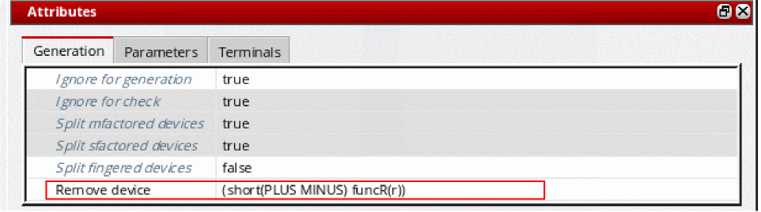

Ignoring Parasitic Devices
Use the Remove device option on the Generation tab to cause parasitic devices to be ignored by merging nets connected to the terminals of a single instance at a time.
You can also use this option to merge nets connected to the terminals of an iterated instance. To do so, specify the option for the instance being iterated, not for the hierarchical block containing the iterated instances.
Note:- The use of this option is not restricted to devices with only two terminals; it also works for devices with more than two terminals.
To generate a device that was earlier set as Ignore for generation, you must also disable the Remove device option to allow the device to be regenerated. Unless the Remove device option is also set to false, the nets connected to the instances are merged and the device is ignored for generation.
- In the Configure Physical Hierarchy window, click the Instances tab.
-
Click the row containing the instance you want to ignore.
The row is highlighted and the options in the Attributes pane are enabled. -
In the Generation tab, specify the Remove device argument in the text field provided.
For example, for a resistor with terminal names PLUS and MINUS,-
(short(PLUS MINUS))would short the terminals. -
(short(PLUS MINUS) funcR(r))would short the terminals only if the user-defined SKILL functionfuncRreturns non-nil.
A samplefuncRfor the above case would be as follows.
Theprocedure( funcR(r) if(r<100 then t else nil) )funcRSKILL function must already be defined in your in your.cdsinitorlibInit.ilfile. The first parameter of the SKILL function isrand must be an instance or cell parameter of the instance that you are testing for removal (defining, for example, the resistance value for a resistor).
The system searches the instances in the design for the parameterrand evaluates the value for that parameter in each of the instances in which it exists. For the purposes of this example, parameterrevaluates to 30.
The system then calls thefuncRfunction, passing the value 30 as the first argument. ThefuncRfunction compares this value to a predefined value (in this case 100).
-
-
From the menu bar, choose File – Save to save the physical configuration view.
The setting takes effect the next time you generate or update the layout view.
Rules to Handle Device Removal
-
A single function applies for all the
short()lists. - If the function is missing, the terminals are shorted as specified in the short rule.
- If the device is not removed, the terminals are not shorted.
- A warning is issued when the device is not ignored in the netlisting.
Rules for Net Merging during Remove Device
The system uses the following rules to decide which net survives after the device is shorted.
- Global nets, such as gnd!, or nets connected to I/O pins always survive.
-
If there are no global or external nets, the net at a higher level of the hierarchy survives. For example,
net1survives over/I1/net2. -
If both the nets are at the same hierarchy level, the labeled net survives. For example, the labeled net,
net10,survives over the non-labeled net,net1. -
If both the nets have a label, the net that has the shortest name and is the first one alphabetically, survives. For example, the labeled
netAAsurvives over the labelednetZZand over the non-labelednetA. -
If the nets are not labeled and their names are of the same length, the net that survives is the first one alphabetically. For example,
netMsurvives overnetN.
When merging the nets of a shorted device, if you want a particular net to survive, you must add a label to the net. Labeled nets survive over non-labeled nets even if the name of the non-labeled net is shorter.
Related Topics
Configure Physical Hierarchy Window
Return to top